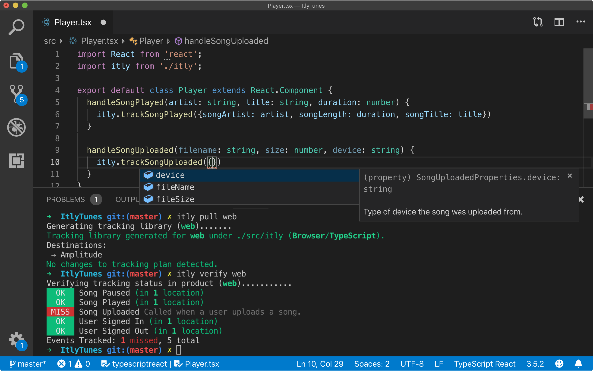

The Challenge
Product teams struggled with data quality issues that undermined trust in analytics. According to research, only 3% of companies have data that meets basic quality standards, and bad data can cost organizations $15 million annually.
Key Finding: Through 378 customer interviews, we discovered that untrustworthy data—caused by preventable human errors in definition, instrumentation, and validation—was the primary barrier preventing teams from using data to drive growth decisions.
My role as the first design hire at Iteratively was to lead the v2 redesign using customer feedback, then guide the integration into Amplitude's platform post-acquisition.
The Solution
I redesigned the tracking plan platform with a focus on simplifying complexity and enabling collaboration:
V2 Redesign
- Flat 3-panel layout: Navigation, main content, and detail pane for easy scanning and context
- List view over table view: Better performance and flexibility for complex data structures
- Enhanced publishing workflow: Visual updates showing branch/publishing connections with preview capabilities
- Observe feature: Real-time status monitoring showing expected vs. unexpected events and implementation health
- Activity feed: Increased transparency for cross-functional collaboration

Results
The redesigned platform delivered strong results for both Iteratively and the Amplitude integration:
- Reached 100+ active users within 3 months of v2 launch, exceeding adoption goals
- 68% 30-day retention rate demonstrating strong product-market fit
- Successful acquisition by Amplitude in May 2021 for data governance capabilities
- Integrated into Amplitude's Digital Optimization System serving 4,300+ customers
- Reduced data management burden — addressing the #1 time-consuming task (64% of teams cited this)
Learnings
Key takeaways from redesigning and integrating the platform:
- Simplicity enables adoption — Moving from table to list view improved flexibility and performance
- Weekly customer discovery drives direction — Continuous feedback shaped prioritization and feature development
- Integration requires nuanced thinking — Merging two products meant addressing overlapping features (workspaces, property management) with different mental models
- Design systems scale across platforms — The 3-panel layout became a foundation for future Amplitude integration work
- Collaboration trumps perfection — Shipped with feasible solutions (e.g., tagging-based property groups) rather than waiting for ideal backend architecture
Interested in discussing more?